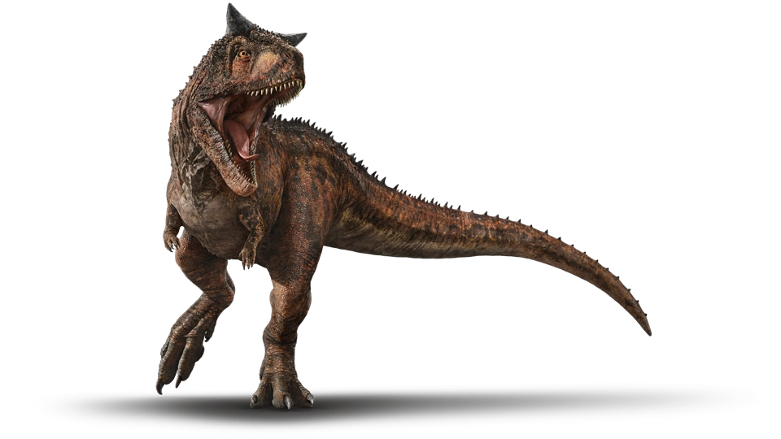
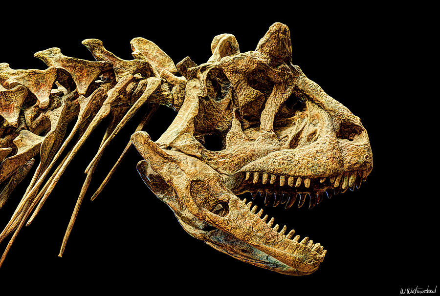
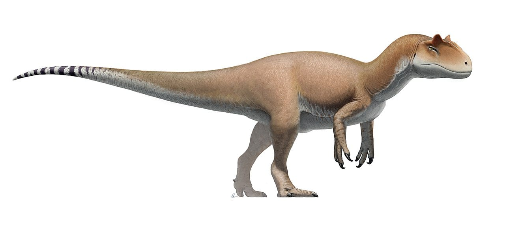
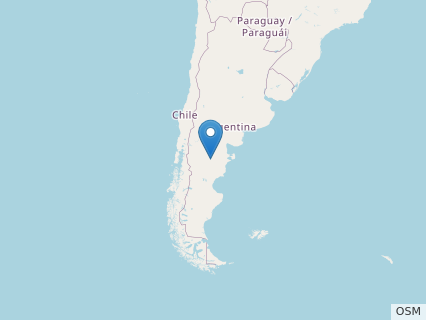

Carnotaurus
Genus - Carnotaurus. Species - C. sastrei. Family - Abelisauridae. Suborder - Aucasaurus . Order - Carnotaurinane . Subclass - theropod. Class - Carnotaurus . Phylum - Chordata. Kingdom - Animalia.
Size Range, Habitat and Distribution
The Carnotaurus was able to grow between 7.8 and 9 meters(22 to 30 feet), it was smaller than the T. rex. Its jaws had a bite force of 3341 newtons . The Carnotaurus lived in coastal areas, places on the coast where the tide had receded, and estuaries. The Carnotaurus was known to live in Argentina and Patagonia.

Identification
The Carnotaurus is recognizable by its horns on its head, its forward facing eyes that were not common among dinosaurs, and its small forelimbs that it shares with the Tyrannosaurus Rex.And it was covered in small sharp scales all across its body.
Time Period and Discovery
It lived during the late cretaceous period about 83.5 to 66 million years ago and existed at the same time as ankylosaurus, hadrosaurus, and ceratopsin . Jose Bonaparte discovered the Carnotaurus in 1985, in argentina.
Feeding Habits and Behevaiors and communication
Due to the carnotaurus having a smaller bite force compared to other large theropods, it would hunt smaller prey, but it is thought that it would only hunt larger prey in packs.They were known to be incredibly threatening to all prehistoric life, and were even able to swallow prey whole. And were known to be one of the most nimble theropods. In their packs they were known to nomadic and solitary.
Life cycle and Breeding
Not much is known about the Carnotaurus life cycle other than it was able to live for 20 - 30 years and preferred to live in tropical climates. The Male carnotaurus is believed to have used a dance to try and attract a female carnotaurus, something that it shares with modern day birds.
Predators
The Carnotaurus was not known to have many predators but it is believed that it would at least compete with the allosaurus for food, many dinosaurs including velociraptors and large theropods would avoid areas where the carnotaurus lived.
Fossil
Only one carnotaurus fossil has been found, and it was the one that Jose Bonaparte discovered in 1984, its a large bipedal dinosaur with a large neck, massive legs, short arms, and horns protruding out of the head. Its fossil is officially known as